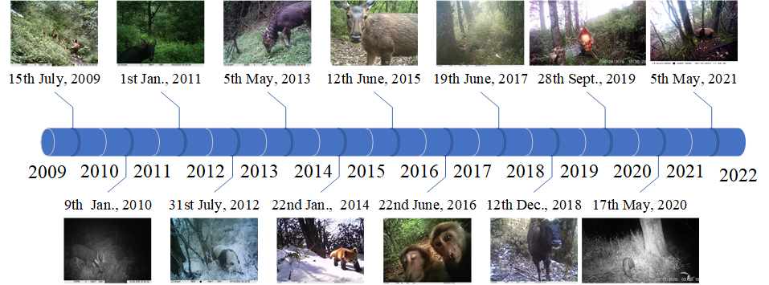

Collected from 2009 to 2021 over 12 years, with thousands of camera days. These images capture elusive wildlife, unveiling unique behaviors and appearances, offering invaluable scientific research opportunities.

Understanding and analyzing animal behavior is increasingly essential to protect endangered animal species. However, the application of advanced computer vision techniques in this regard is minimal, which boils down to lacking large and diverse datasets for training deep models.
To break the deadlock, we present LoTE-Animal, a large-scale endangered animal dataset collected over 12 years, to foster the application of deep learning in rare species conservation. The collected data contains vast variations such as ecological seasons, weather conditions, periods, viewpoints, and habitat scenes. So far, we retrieved at least 500K videos and 1.2 million images. Specifically, we selected and annotated 11 endangered animals for behavior understanding, including 10K video sequences for the action recognition task, 28K images for object detection, instance segmentation, and pose estimation tasks. In addition, we gathered 7K web images of the same species as source domain data for the domain adaptation task.
We provide evaluation results of representative vision understanding approaches and cross-domain experiments. LoTE-Animal dataset would facilitate the community to research more advanced machine learning models and explore new tasks to aid endangered animal conservation. Our dataset will be released with the paper.
We followed the COCO standards and annotated multiple tasks including object detection, instance segmentation, pose estimation, and action recognition.

@InProceedings{Liu_2023_ICCV,
author = {Li, Dan and Hou, Jin and Huang, Shaoli and Liu, Jing and He, Yuxin and Zheng, Bochuan and Ning, Jingfeng and Zhang, Jindong},
title = {LoTE-Animal: A Long Time-span Dataset for Endangered Animal Behavior Understanding},
booktitle = {Proceedings of the IEEE/CVF International Conference on Computer Vision (ICCV)},
month = {June},
year = {2023},
pages = {00000-00000}
}